机器学习视频笔记
第 1 集: 智能从何而来
1. 先问一个更底层的问题: 什么是智能
这一集不是直接讲某个模型,而是先把机器学习放在人工智能的历史和问题意识里: 我们到底想让机器获得什么能力? 如果只是会完成单一任务,还不能等同于通用智能。
对后续知识梳理有用的一点是: 这集把“机器学习”定位为实现人工智能的一条路径,而不是一个孤立算法集合。
2. 智能 = 学习能力 + 迁移能力
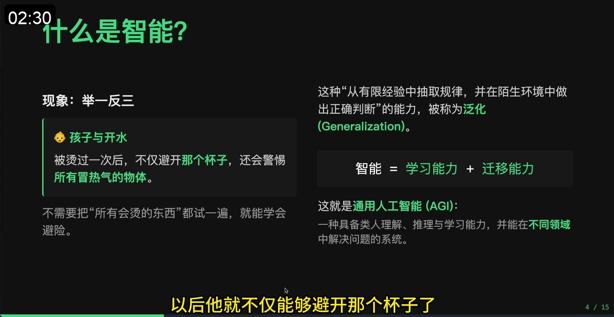
视频用“被热水杯烫过的小孩”来解释智能: 人不需要试遍所有会烫的东西,而是能从有限经验中抽取规律,再迁移到新场景。
整理成机器学习语言就是:
- 学习能力: 从经验/数据中总结规律。
- 迁移能力: 面对没见过的新样本,还能用规律做判断。
- 泛化能力: 机器学习里更常用的说法,对应“举一反三”。
这可以作为机器学习导论里的核心句: 模型训练不是为了背训练集,而是为了在未见数据上泛化。
3. 苹果例子: 人不是靠穷举规则识别事物
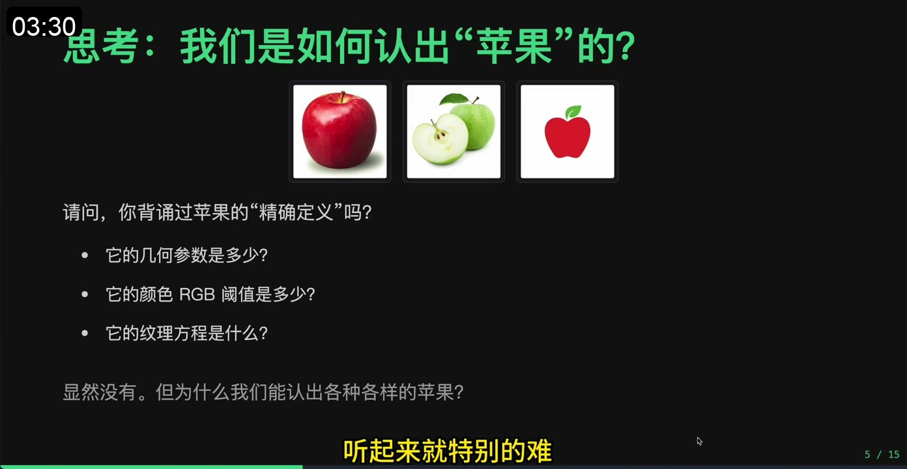
人能识别不同形状、颜色、抽象程度的苹果,但很难给出一套完整的“苹果规则”。这正好引出传统规则编程的局限: 现实对象变化太多,规则无法穷举。
机器学习的思路是反过来: 不先写死规则,而是给模型足够多的样本,让它从样本中学习“苹果”背后的统计规律。
4. AI 发展的两条路线: 符号规则 vs 数据学习
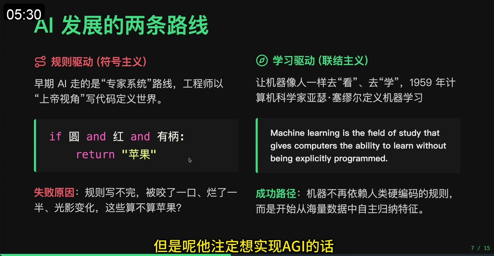
视频把早期 AI 的“专家系统/符号主义”和后来的“机器学习/连接主义”做了对比:
- 符号主义: 人把规则写出来,机器按规则推理。
- 学习驱动: 人提供数据和任务,机器从数据里学习规律。
这里适合连接到机器学习主干的第一层问题: 为什么机器学习不是“写规则”,而是“从数据中拟合函数”。
5. 为什么近十几年 AI 才大爆发: 数据 + 算力
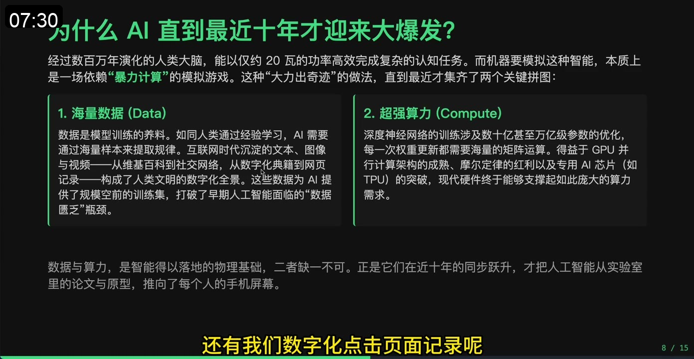
视频给出两个前提:
- 海量数据: 互联网沉淀了文本、图片、视频和行为记录。
- 超强算力: GPU/TPU 让大规模矩阵运算和参数优化可行。
这对后续深度学习也很重要。深度学习不是只靠“算法突然聪明”,而是数据规模、模型规模、计算能力共同推动。
6. 模型的本质: 一个从输入到输出的函数
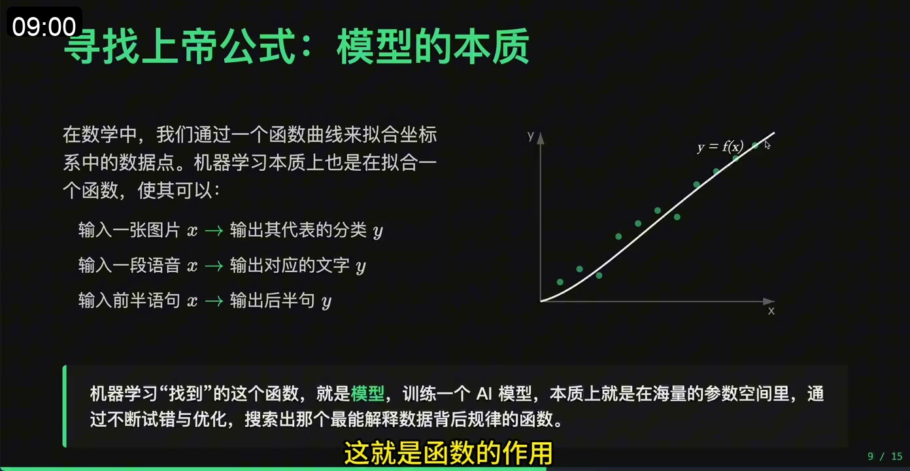
视频用数学函数类比模型:
- 给模型一张图片
x,输出类别y。 - 给模型一段语音
x,输出文字y。 - 给语言模型一段上文
x,输出下一个 token 或后续文本y。
机器学习训练的核心,就是在大量候选函数/参数空间中,找到一个最能解释数据规律的函数。
这一点应当进入机器学习板块的主线定义: 模型不是神秘黑盒,而是一个可学习的映射函数。
7. 人工智能发展的三层: 机器学习、深度学习、大语言模型
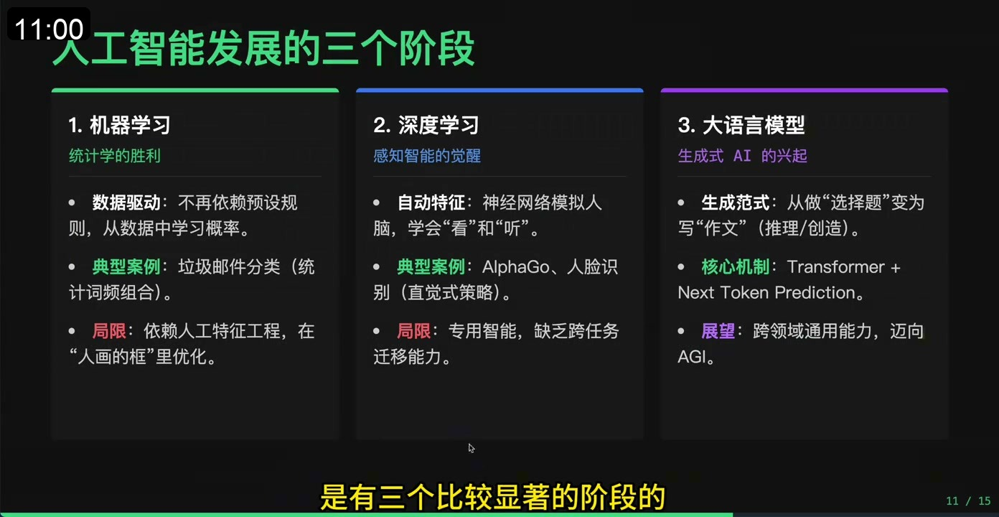
视频把现代 AI 的学习路线拆成三个层次:
- 机器学习: 从数据中学习规律,但常依赖人工特征。
- 深度学习: 用神经网络自动学习层级特征。
- 大语言模型: 基于 Transformer 和下一个 token 预测,做生成式任务。
这和我们后续知识库结构可以对应起来: 机器学习作为深度学习的前置板块,深度学习再连接到 Transformer/LLM。
8. 为什么语言模型有机会产生复杂能力
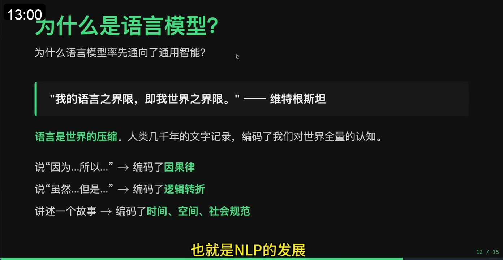
视频的解释是: 语言压缩了人类对世界的大量认知。模型为了预测下一个 token,被迫学习语法、常识、因果、代码、故事结构等隐藏规律。
这不是严格证明,但作为直觉很有帮助。后续整理 Transformer 时,可以用它解释“为什么 next token prediction 看似简单,却能逼出复杂表示”。
9. 另一条 AGI 路线: 空间智能
视频也补充了另一种观点: 语言是世界的镜子,但不是世界本身。真正理解物理世界,可能还需要空间智能,即对位置、速度、重力、物体交互的理解。
这部分不适合在机器学习入门里展开太深,但可以作为“AI 发展路线补充”: 语言模型很强,但视觉、机器人、世界模型仍是重要方向。
10. 本集对机器学习主干的作用
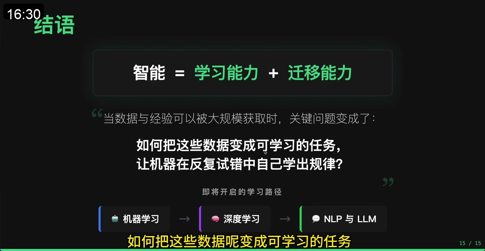
本集最适合作为机器学习板块的“导论前言”,核心不是算法,而是建立三件事:
- 机器学习为什么出现: 规则写不完,需要从数据中学习。
- 机器学习到底学什么: 学一个能泛化的函数/模型。
- 后续路线怎么走: 机器学习 → 深度学习 → NLP/LLM。
入库建议
建议拆成一个主节点:
机器学习导论: 从智能、泛化到模型
正文不必完整复述 AI 发展史,重点保留:
- 智能 = 学习能力 + 迁移能力。
- 泛化是机器学习的核心目标。
- 模型是从输入到输出的可学习函数。
- 机器学习、深度学习、大语言模型的层级关系。
第 2 集: 机器学习究竟是什么
1. 本集定位: 机器学习的第一课
这一集从“AI 是什么”过渡到“机器学习是什么”。核心定义可以整理为:
机器学习是让计算机不依赖显式规则编程,而是从数据中自动学习规律,再用这些规律对未来样本进行预测或决策。
2. 传统编程的困境: 复杂任务很难写完规则
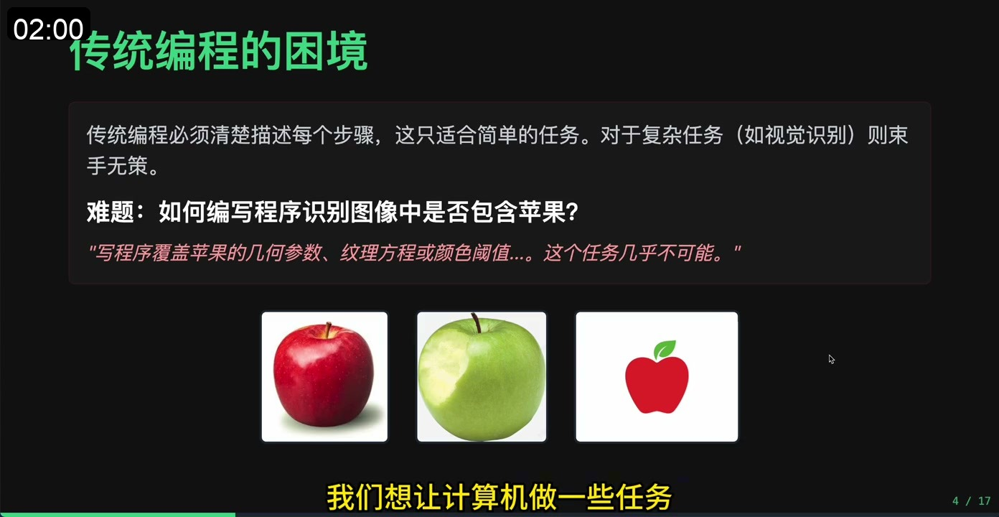
传统编程适合规则明确的任务。问题是,像“识别图片里有没有苹果”这种任务,规则很难穷举:
- 苹果可以是红色、绿色、被咬过、抽象图标。
- 光照、角度、遮挡都会改变图像表现。
- 人能认出来,但很难把完整判断规则写成代码。
这正是机器学习出现的动机: 当规则难以显式写出时,改为让机器从大量样本中学习。
3. 从人类认知到机器学习
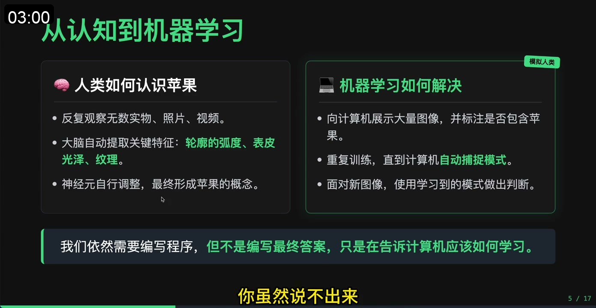
人看到大量苹果样本后,会在脑中形成“苹果”的概念。机器学习模仿的是这个过程:
- 输入大量样本。
- 给出标签或反馈。
- 让模型自己捕捉可用于判断的模式。
- 面对新样本时,用学到的模式做预测。
这里可以作为机器学习入门的直观例子: 机器学习不是直接把答案存起来,而是寻找能解释大量样本的规律。
4. 深度学习是机器学习的一种
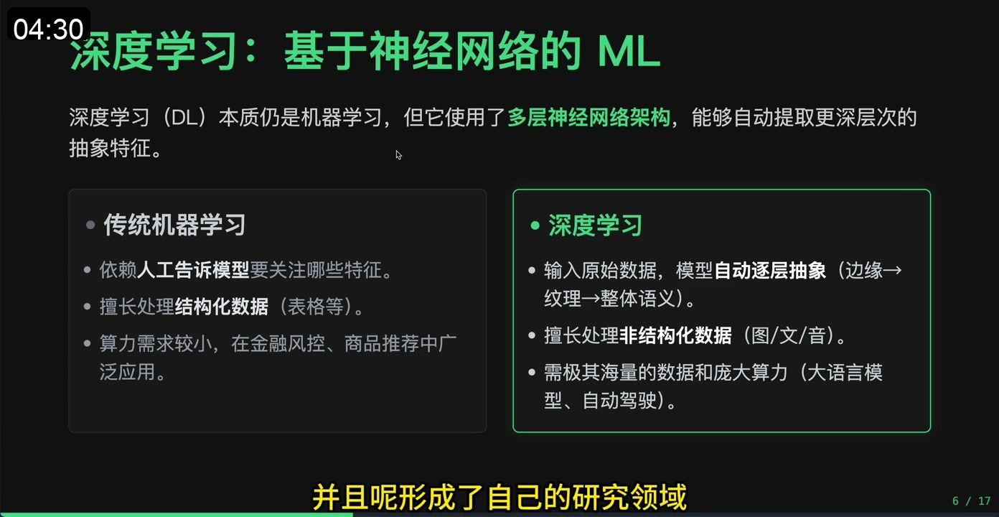
视频指出,深度学习是机器学习的一个分支。普通机器学习常常需要人工设计特征,深度学习则更强调让神经网络自动学习层级特征。
这对知识库结构有直接意义: 机器学习不是深度学习的反面,而是更大的母集合。线性回归、逻辑回归、决策树等传统模型,可以帮助理解“模型、损失、优化、泛化”等共同问题。
5. AI、ML、DL 的包含关系
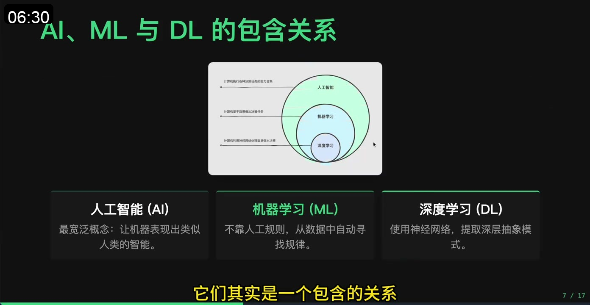
可以整理成三层:
- AI: 目标层,让机器表现出感知、推理、学习、决策能力。
- ML: 实现路径之一,让机器从数据中学习规律。
- DL: ML 的一个分支,用深层神经网络学习复杂表示。
这张图适合放进机器学习板块首页,帮助读者理解“为什么先复习机器学习,再进入深度学习”。
6. 什么是模型
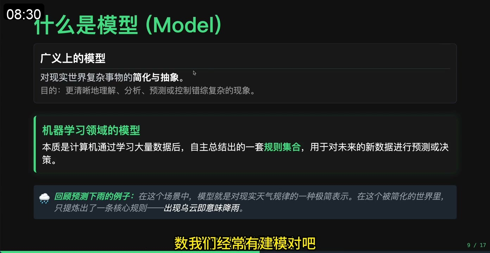
视频用“垃圾邮件分类”解释模型: 模型是一套把输入映射到输出的规则/函数,但这套规则不是人工完整写死的,而是从数据中学出来的。
机器学习里常见的说法是:
- 数据提供经验。
- 算法提供学习方法。
- 模型是学习后的结果。
- 参数决定模型如何具体判断。
7. 算法和模型不要混淆
视频用一句话区分:
- 算法: 训练模型的方法。
- 模型: 训练完成后用于预测的东西。
比如逻辑回归可以理解为一种模型形式,梯度下降是优化参数的算法。这个区别后面非常关键,否则容易把“模型结构”和“训练方法”混在一起。
8. 垃圾邮件例子: 从单特征到多特征
视频先用“某个词出现”作为简单特征,再逐步扩展到多个特征组合。模型并不只是看一个关键词,而是给不同特征分配不同权重。
这可以引出后续线性模型:
得分 = w1 * 特征1 + w2 * 特征2 + ... + b模型训练的目标,就是找到一组更合适的权重。
9. 机器学习的本质: 寻找最优权重
如果模型是一组带权重的规则,训练就是不断调整权重,让模型预测更接近真实标签。
这节可以和第 4、5 集接上:
- 第 4 集讲线性回归如何定义模型和损失。
- 第 5 集讲梯度下降如何调整参数。
10. 学习路线: 数学基础 + 编程实践
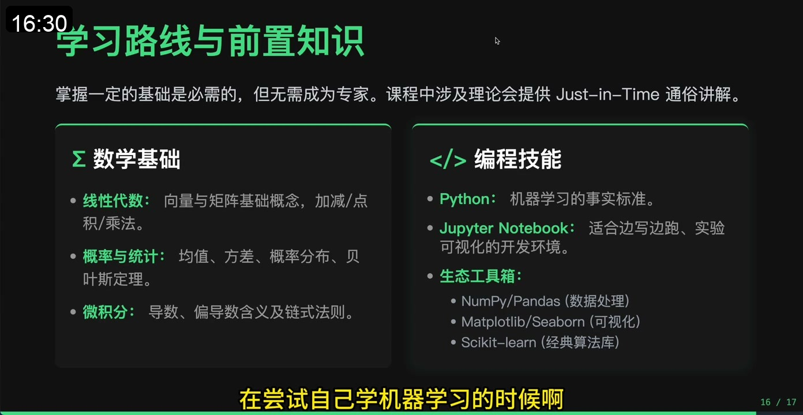
视频最后强调机器学习需要两类基础:
- 数学基础: 线性代数、概率统计、微积分等。
- 编程实践: Python、NumPy、Pandas、Matplotlib、scikit-learn 等。
这和我们后续规划一致: 原理讲解阶段使用小数据和手算例子,实践阶段用 sklearn 复现经典流程。
入库建议
建议拆成主节点:
机器学习是什么: 数据、模型、算法与参数
正文重点保留:
- 机器学习与传统编程的区别。
- AI、ML、DL 的包含关系。
- 模型、算法、参数、特征、预测的概念边界。
- 用“垃圾邮件分类”作为第一个简单分类例子。
第 3 集: 机器学习类型
1. 本集定位: 先建立任务地图
机器学习应用很多,但问题类型可以先粗分。这个分类不是为了背概念,而是为了回答:
面对一个数据问题时,我们到底是在做预测、找结构,还是在动态环境里学策略?
2. 数据、特征与标签
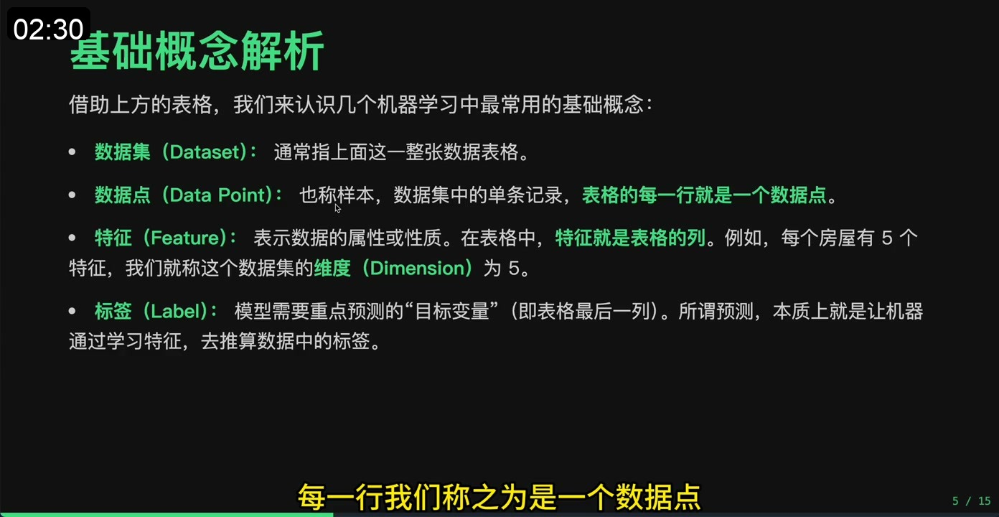
视频先用结构化表格解释基本概念:
- 数据集: 一整张训练/测试用的数据表。
- 样本/数据点: 表格中的一行。
- 特征: 用于描述样本的输入变量。
- 标签: 模型要预测的目标。
这一段很适合放在机器学习基础的开头,因为后面回归、分类、聚类、降维都会反复使用这些词。
3. 三大分支: 监督、无监督、强化学习
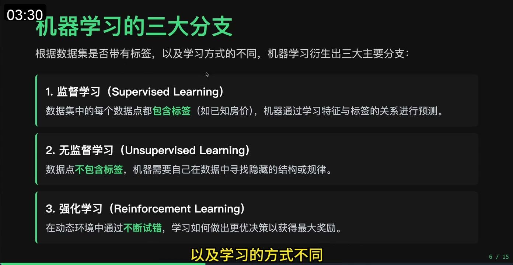
按数据和学习方式可以先分为:
- 监督学习: 有标签,学习输入到标签的映射。
- 无监督学习: 无标签,发现数据内部结构。
- 强化学习: 在环境中试错,根据奖励学习策略。
这张图可以作为机器学习知识地图的一级分叉。
4. 监督学习: 处理带标签数据
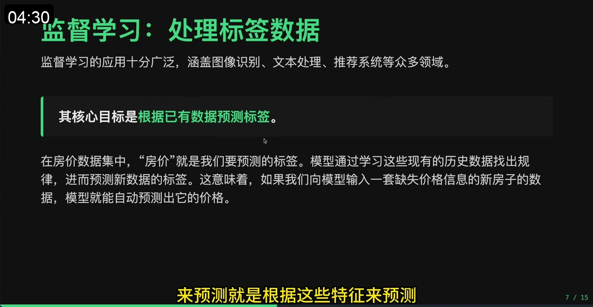
监督学习的关键是“训练样本带有正确答案”。模型通过比较预测值和真实标签,调整参数。
典型任务:
- 根据面积、房龄、地段预测房价。
- 根据邮件内容判断是否垃圾邮件。
- 根据图片判断类别。
5. 监督学习的两类核心模型: 回归与分类
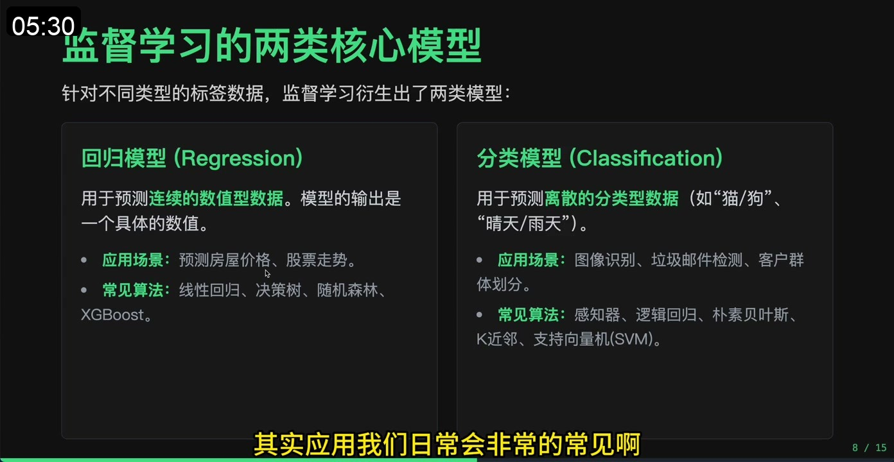
监督学习里最基础的两类:
- 回归: 预测连续数值,例如房价、销量、温度。
- 分类: 预测离散类别,例如是否违约、邮件类别、图片类别。
后续课程顺序也对应这里: 线性回归先解决连续预测,逻辑回归再进入分类。
6. 无监督学习: 处理无标签数据
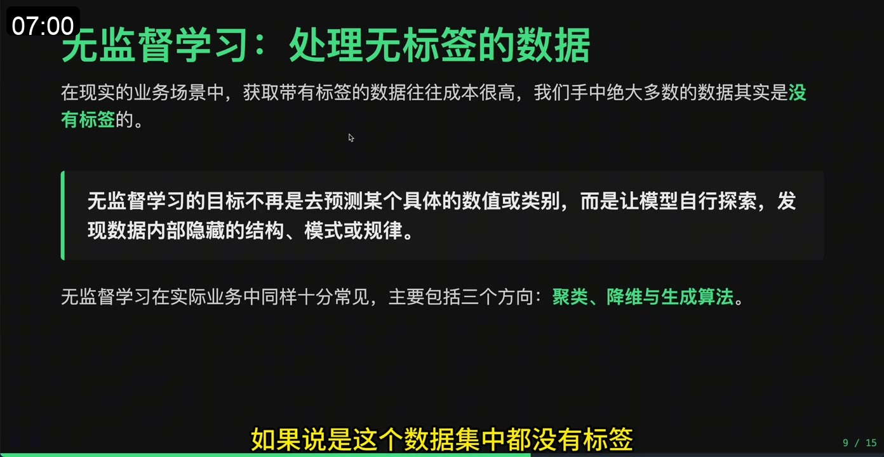
无监督学习没有明确标签,目标不是预测一个已知答案,而是探索数据内部结构。
它适合回答的问题包括:
- 数据能否自然分成几类?
- 哪些样本彼此相似?
- 能否压缩维度,保留主要信息?
- 能否从数据分布中生成新样本?
7. 聚类: 让数据自动分组
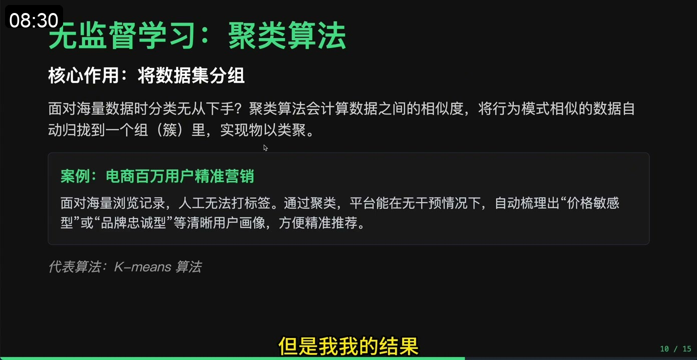
聚类是无监督学习的典型任务。它不是根据人工标签分类,而是根据样本之间的相似性自动分组。
后续可以对应第 13 集 K-Means:
- 先选中心。
- 根据距离分配样本。
- 更新中心。
- 迭代到分组稳定。
8. 降维: 压缩特征但尽量保留信息
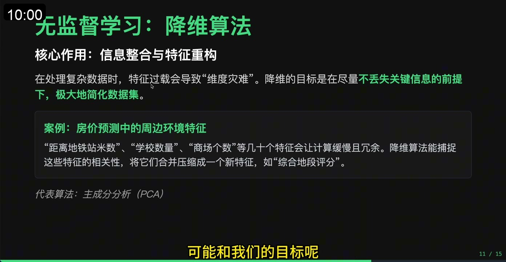
降维的目标是把高维数据压缩到低维空间,同时尽量保留主要结构或信息。
这可以连接到第 14 集 PCA。对于知识库来说,PCA 应该同时挂在:
- 机器学习: 无监督学习/降维。
- 数学基础: 线性代数中的特征值、特征向量、投影。
9. 生成算法: 从数据分布中生成新内容
生成式学习关注的是学习数据分布,再从分布中生成新的样本。它和后续 AIGC、语言模型有关系,但在机器学习入门阶段不宜展开太深。
这一节可作为通往深度学习/生成模型的桥。
10. 强化学习: 在动态环境中试错
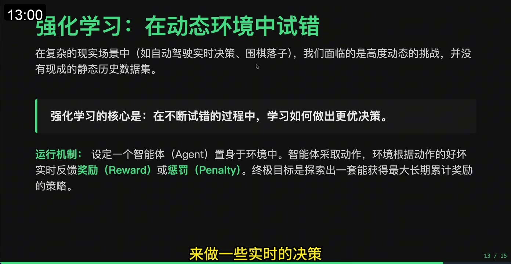
强化学习的核心不是静态数据表,而是智能体和环境交互:
- 智能体选择动作。
- 环境返回状态和奖励。
- 智能体根据长期奖励优化策略。
这与监督学习不同: 它不是每一步都有标准答案,而是在试错中学习更优决策。
11. 本集总结
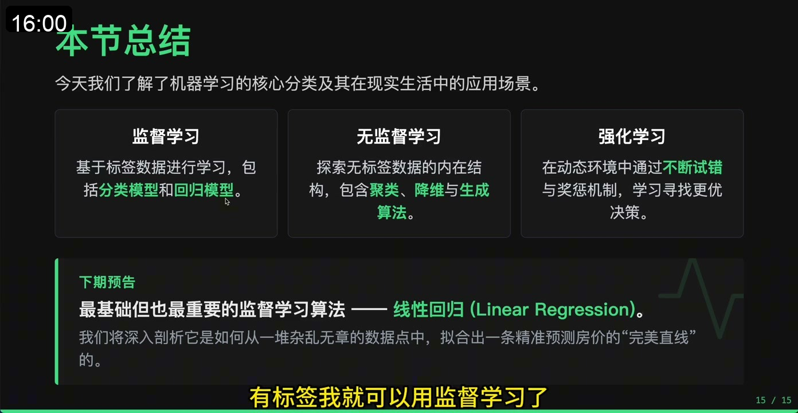
本集适合沉淀为机器学习总览图:
- 监督学习: 回归、分类。
- 无监督学习: 聚类、降维、生成。
- 强化学习: 策略、奖励、环境交互。
入库建议
建议拆成主节点:
机器学习任务类型: 监督、无监督与强化学习
正文重点保留:
- 先解释数据集、样本、特征、标签。
- 再用“是否有标签”和“是否与环境交互”区分任务类型。
- 把后续模型挂到对应分支: 线性回归、逻辑回归、决策树、K-Means、PCA。
第 4 集: 线性回归
1. 本集定位: 从一个可手算模型理解机器学习
线性回归是机器学习里最适合作为“第一模型”的内容,因为它完整包含了机器学习训练的基本结构:
数据 → 模型 → 损失 → 优化 → 预测。
2. 房价例子: 从数据表开始
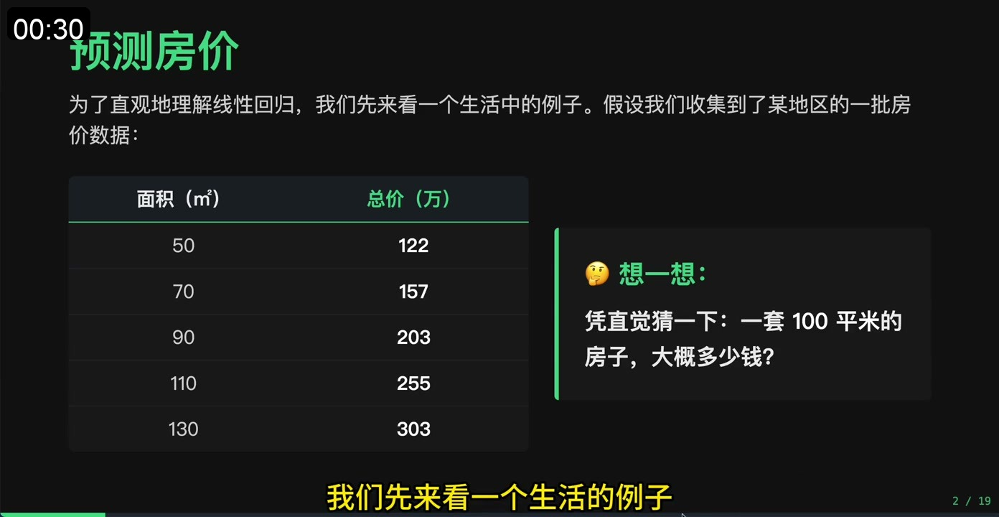
视频用面积和房价做例子。给定若干样本:
- 输入特征: 面积。
- 目标标签: 房价。
- 任务: 根据面积预测未知房子的价格。
这个例子不一定要追求真实业务含义,重点是用简单数据承载“从数据找规律”的过程。
3. 找趋势线: 用一条线描述数据规律
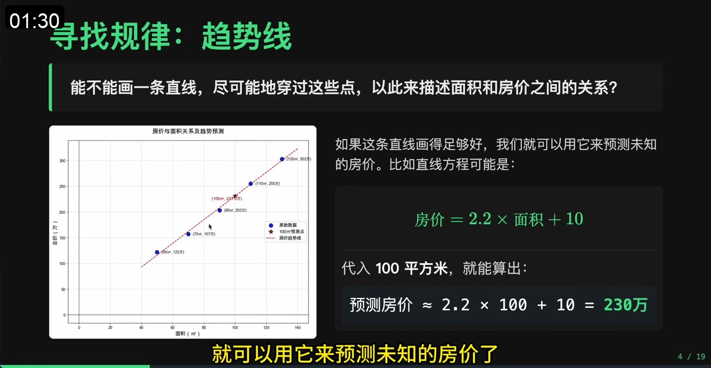
把面积和房价画到坐标系后,可以看到它们大致呈正相关。线性回归做的事情,就是找一条尽量贴近数据点的线。
直观理解:
- 点离线越近,模型预测越准。
- 点离线越远,模型误差越大。
- 训练就是让这条线越来越合理。
4. 什么是线性回归
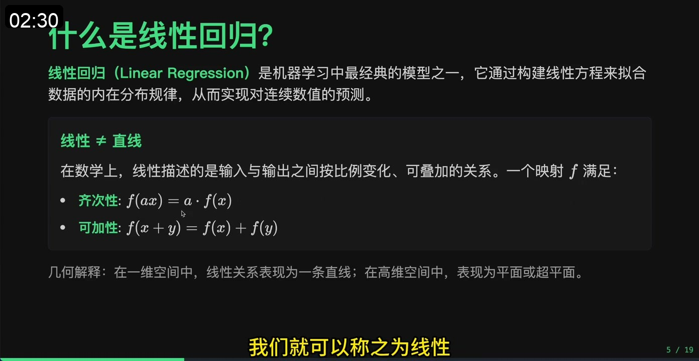
线性回归用线性函数拟合输入和输出之间的关系。这里的“线性”不只是在二维图里画直线,更一般地说,它表示输出是输入特征的加权组合。
一维时像直线,多维时对应平面或超平面。
5. 模型公式: 参数决定预测结果
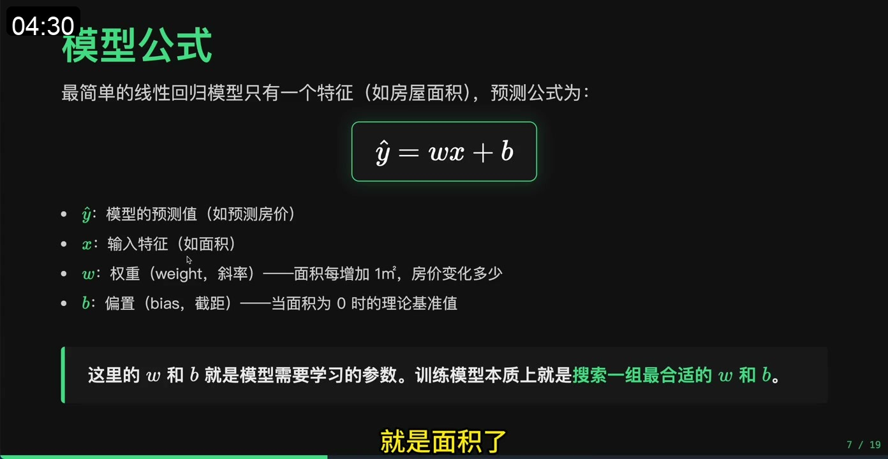
最简单的一元线性回归:
y_hat = w x + b其中:
x: 输入特征,例如面积。y_hat: 预测结果。w: 权重/斜率,控制面积变化对房价的影响。b: 偏置/截距,控制整体基准值。
机器学习要学的,就是合适的 w 和 b。
6. 损失函数: 衡量模型准不准
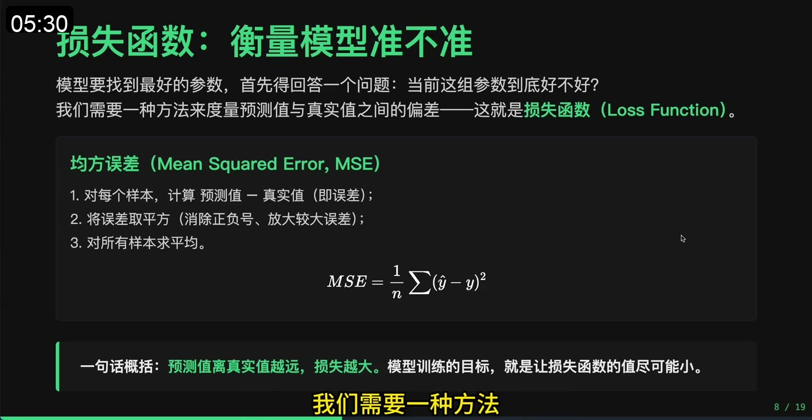
模型有了预测值,还需要衡量预测值和真实值之间差多少。线性回归常用均方误差 MSE:
MSE = 平均((真实值 - 预测值)^2)为什么平方?
- 把正负误差都变成正数。
- 放大较大的错误。
- 数学上便于求导和优化。
这部分应当连接到数学基础里的“误差、平方、导数、梯度”。
7. 梯度下降: 寻找更好的参数
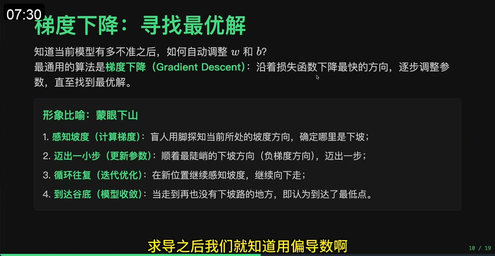
损失函数告诉我们“当前参数好不好”,但还需要一个方法告诉我们“往哪里改”。梯度下降就是用梯度方向更新参数,让损失逐步降低。
这个点自然接到第 5 集: 线性回归先给出训练问题,梯度下降再解释参数怎么更新。
8. 模型训练的核心循环
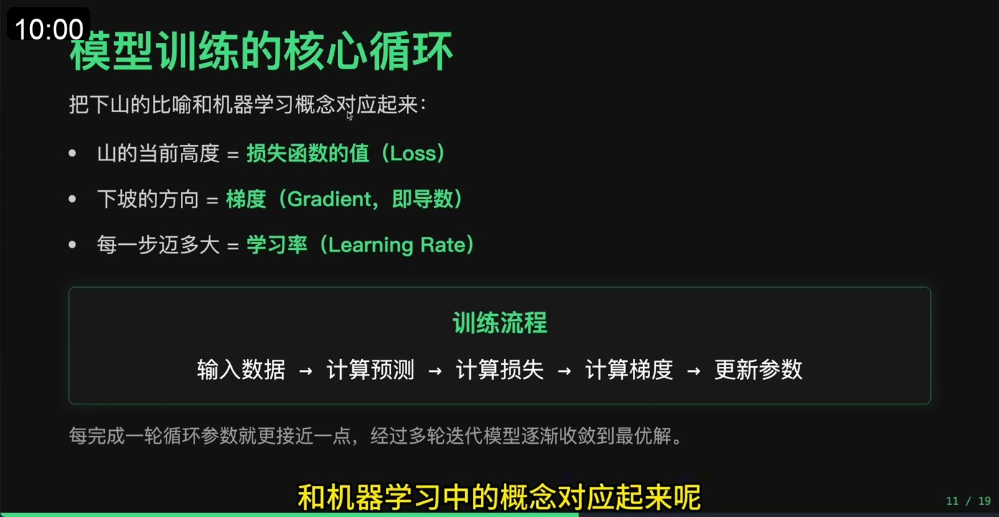
训练过程可以整理成固定循环:
1. 输入数据。
2. 用当前参数计算预测。
3. 根据预测和真实值计算损失。
4. 根据梯度更新参数。
5. 重复多轮,直到损失较低或收敛。
这条流程不仅适用于线性回归,也适用于后面的逻辑回归、神经网络。
9. 从一个特征到多个特征
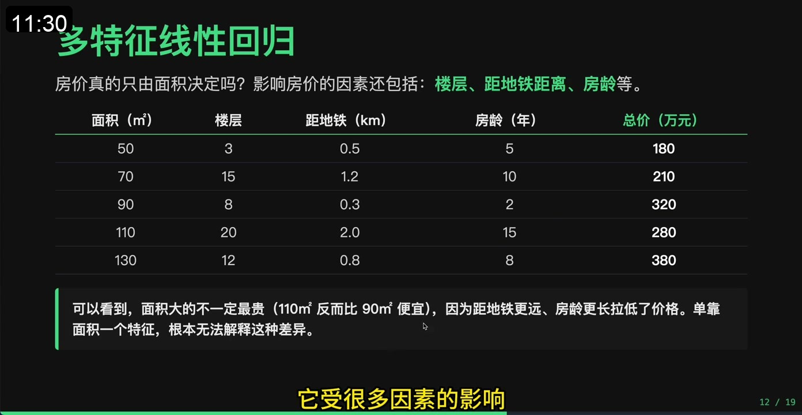
现实问题通常不只一个特征。房价可能受面积、楼层、房龄、地段等多个因素影响。
多元线性回归可以写成:
y_hat = w1 x1 + w2 x2 + ... + wn xn + b这为后续矩阵形式做铺垫。
10. 向量化表达: 一批特征写成矩阵运算
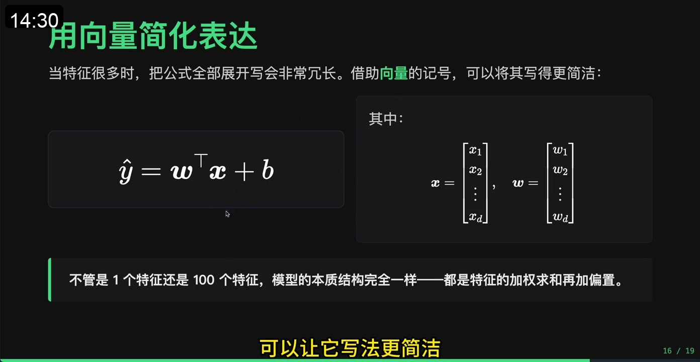
向量化写法:
y_hat = w^T x + b它的意义不是炫公式,而是把多特征加权求和写成统一形式。后续批量样本训练、矩阵求导、神经网络层计算,都会沿用这种写法。
11. 多项式回归: 当直线不够用
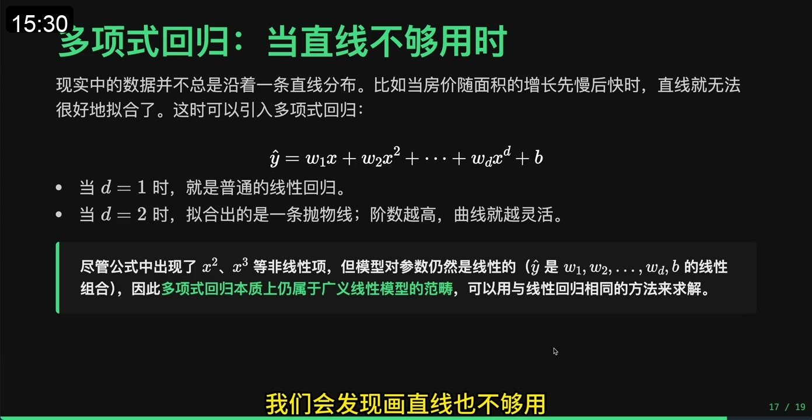
如果数据关系不是直线,可以加入 x^2、x^3 等特征,让模型拟合曲线。
这部分非常适合连接“特征工程”: 多项式回归本质上仍然是线性模型,只是人为构造了非线性特征。
12. 承接逻辑回归与深度学习
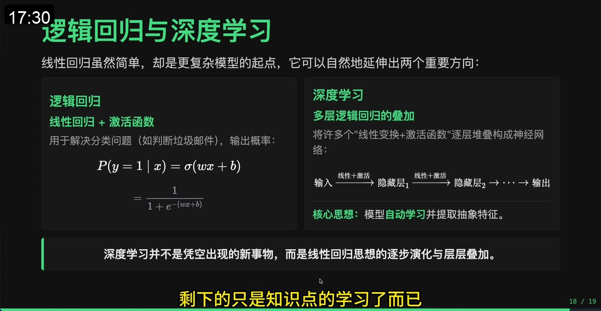
视频最后把线性回归连接到逻辑回归和深度学习:
- 逻辑回归: 在线性输出后接 sigmoid,用于二分类。
- 深度学习: 多层神经网络仍然大量使用“线性变换 + 非线性激活”的组合。
因此,线性回归不是一个孤立模型,而是理解后续模型结构的底层积木。
13. 本集总结
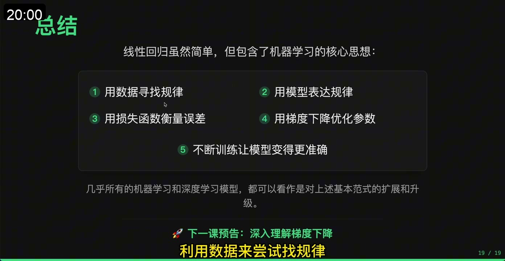
本集适合沉淀为机器学习主干的第一篇正式模型文章。
入库建议
建议拆成主节点:
线性回归: 从数据拟合到模型训练
正文重点保留:
- 用一个小数据集讲清楚输入、标签、预测。
- 模型公式
y_hat = wx + b。 - MSE 为什么衡量误差。
- 梯度下降只是先引出,细节放到第 5 集。
- 多特征向量化要和数学基础的线性代数、矩阵求导联动。
第 5 集: 梯度下降
1. 本集定位: 解释参数如何被更新
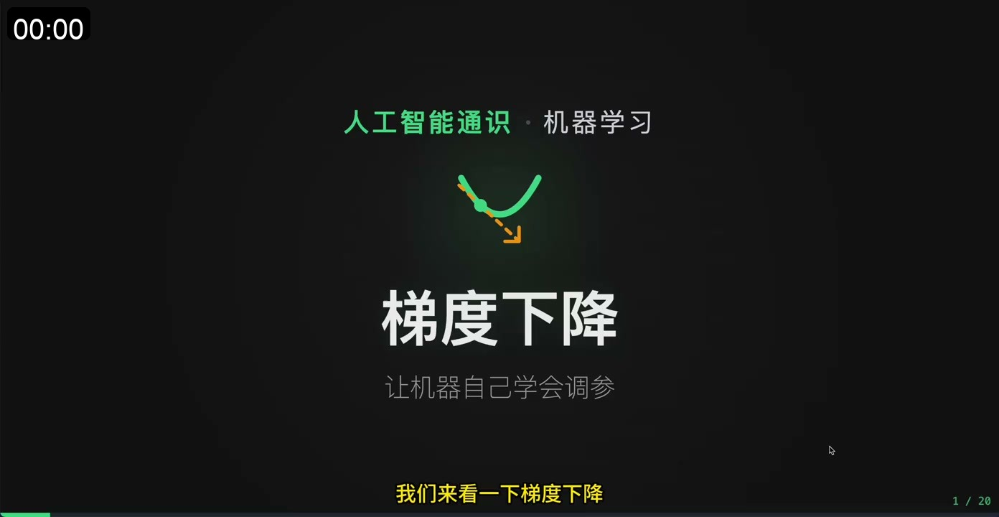
前一集线性回归已经说明了模型和损失,这一集补上关键问题:
知道损失大之后,模型怎么知道参数应该往哪边改?
梯度下降回答的就是这个问题。
2. 从模型训练流程开始
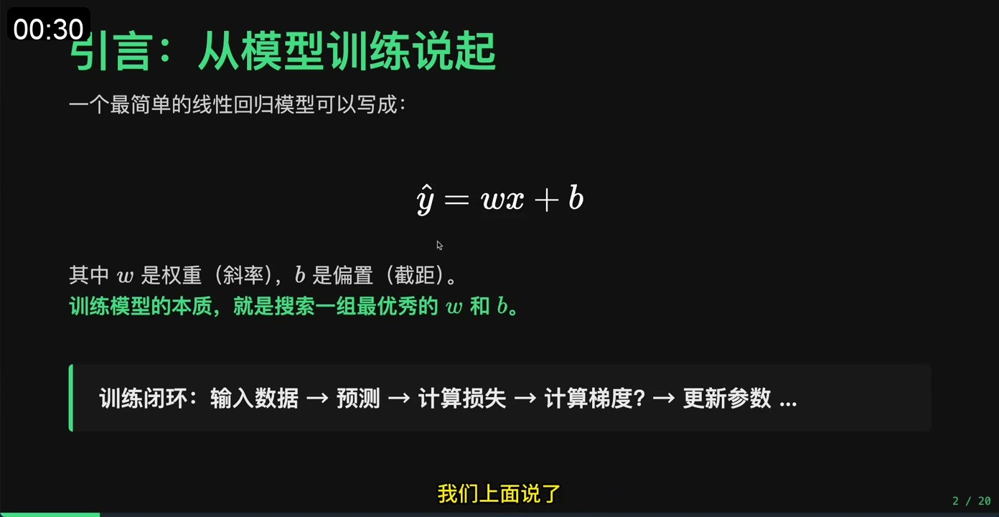
训练流程可以压缩成:
1. 用当前参数预测。
2. 用损失函数衡量误差。
3. 根据误差调整参数。
4. 重复迭代。
梯度下降负责第 3 步: 它告诉我们参数调整的方向和幅度。
3. 损失函数只告诉你准不准,不直接告诉你怎么改
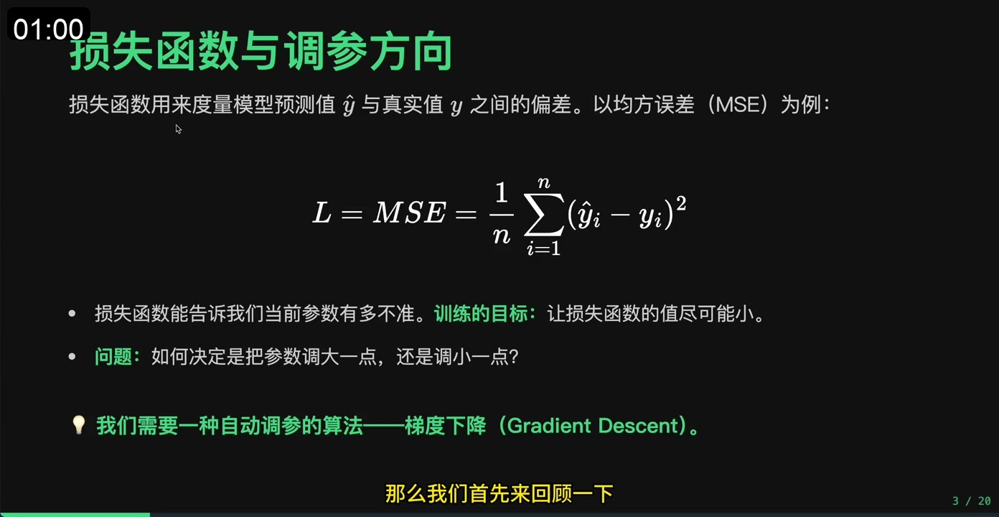
损失函数的值越小,说明预测越准。但只有一个损失值还不够,因为我们还不知道:
w应该变大还是变小?b应该变大还是变小?- 每次应该改多少?
这就需要导数、偏导数和梯度。
4. 数学基础: 导数给出单变量函数的变化方向
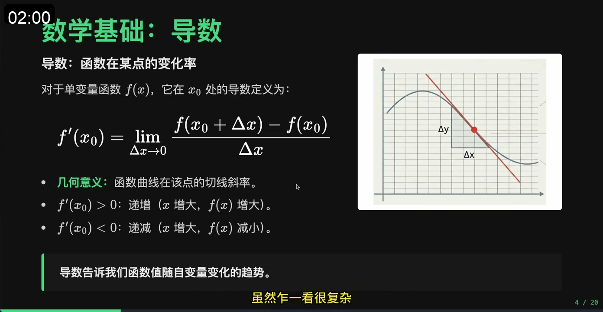
导数表示函数在某一点的变化率。直观上:
- 导数大于 0:
x增大时,函数值倾向于增大。 - 导数小于 0:
x增大时,函数值倾向于减小。 - 导数绝对值越大: 当前变化越陡。
对机器学习来说,我们关心的是损失函数如何随参数变化。
5. 偏导数: 多参数时一次只看一个方向
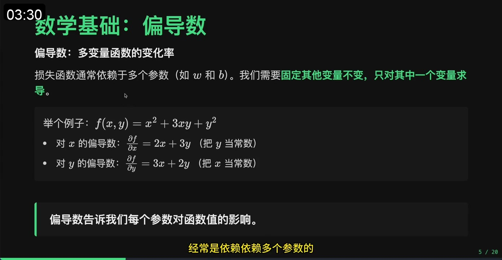
模型通常有多个参数。偏导数的做法是: 固定其他参数,只看某一个参数变化时,损失如何变化。
例如线性回归里有 w 和 b:
∂L/∂w: 损失对w的变化率。∂L/∂b: 损失对b的变化率。
把所有偏导数组合起来,就是梯度。
6. 梯度: 多参数损失函数的方向信息
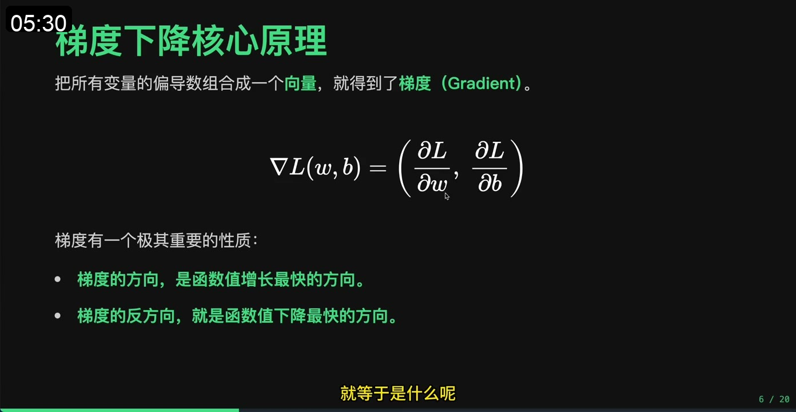
梯度可以看成由多个偏导数组成的向量:
grad L = (∂L/∂w, ∂L/∂b)梯度指向损失上升最快的方向。要让损失下降,就沿着梯度的反方向更新参数。
7. 梯度下降更新公式
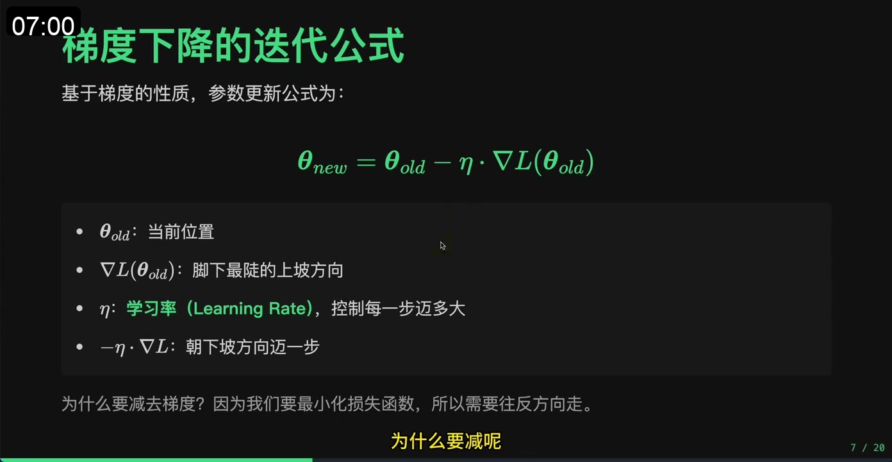
核心公式:
θ_new = θ_old - η * grad L(θ_old)其中:
θ: 参数集合,比如w和b。η: 学习率,控制每次迈多大步。grad L: 当前参数位置的梯度。
8. 线性回归中的梯度推导
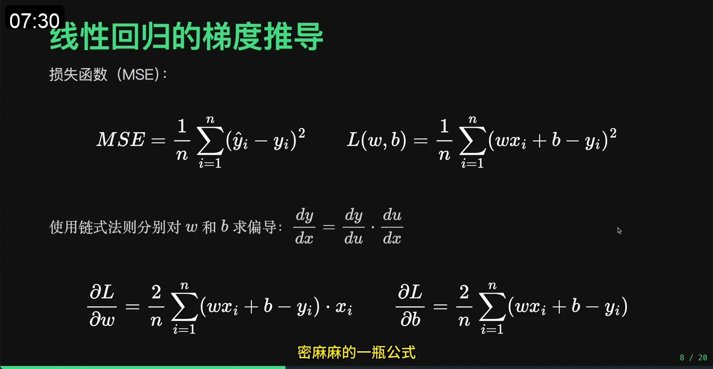
视频把线性回归的 MSE 写出来,再对 w 和 b 求偏导。这里是数学基础和机器学习训练真正接上的地方。
对知识库整理来说,建议把完整推导放在:
数学基础 / 微积分 / 矩阵求导
机器学习正文只保留训练直觉和关键公式,并链接到数学推导。
9. 代码实现: 用循环更新参数
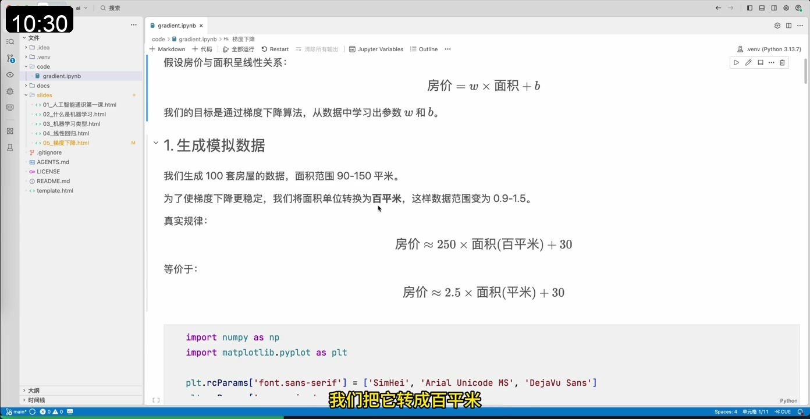
代码层面的训练循环通常是:
for epoch:
y_hat = model(x)
loss = compute_loss(y_hat, y)
grad = compute_gradient(loss, params)
params = params - learning_rate * grad这个结构后续会在 sklearn、PyTorch、神经网络训练中不断出现。
10. 可视化: 参数如何逐步收敛
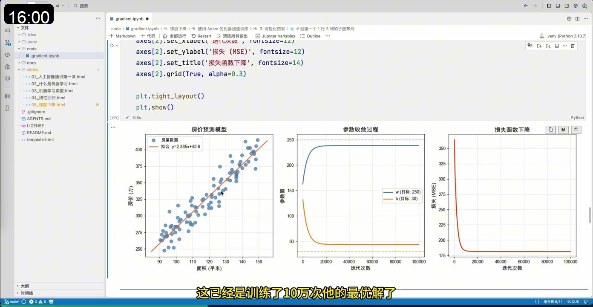
视频用图展示参数变化和损失下降。这个画面对学习很有帮助,因为它把“参数更新”从公式变成了路径:
- 初始参数可能很差。
- 每次沿着下降方向走一小步。
- 多次迭代后逐渐接近较优解。
11. 学习率: 太大太小都会出问题
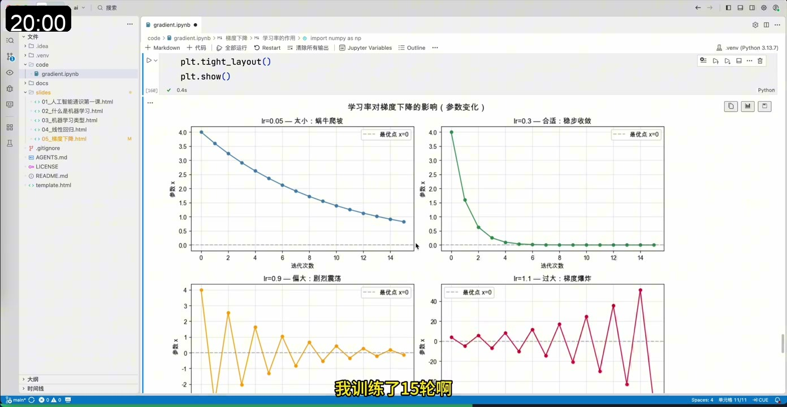
学习率决定每步走多远:
- 太小: 收敛慢。
- 太大: 可能震荡甚至发散。
- 合适: 较稳定地降低损失。
这可以作为后续实验的一个重点: 同一数据、同一模型,只改变学习率,观察收敛曲线变化。
12. 优化算法: 从 SGD 到 Adam
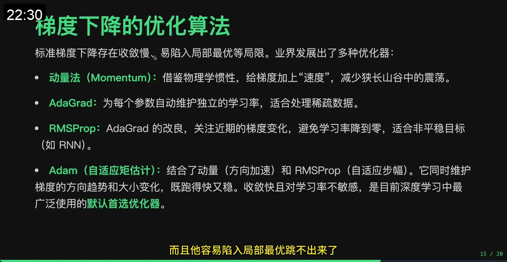
视频补充了常见梯度下降变体:
- Batch GD: 用全量数据计算梯度。
- SGD: 每次用一个样本或小批量近似梯度。
- Momentum: 引入动量,减少震荡。
- RMSProp/Adam: 自适应调整不同参数的学习步长。
这部分在机器学习阶段点到为止即可,深度学习训练时再展开。
13. Adam 的收敛效果
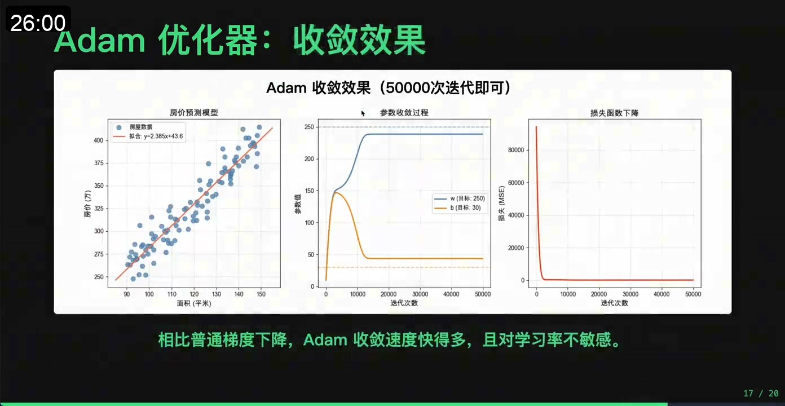
Adam 是深度学习里非常常见的优化器。它结合了动量和自适应学习率思想,通常比朴素梯度下降更稳定、更快。
正式正文里不建议一上来推 Adam 公式,先让读者理解: 优化器本质上都在解决“如何更好地沿着损失下降方向更新参数”。
14. 梯度下降是深度学习的基础
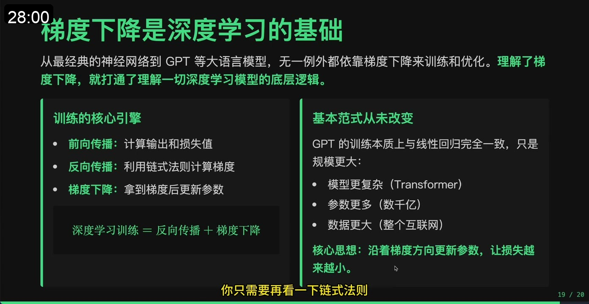
视频最后强调: 梯度下降不仅用于线性回归,也是神经网络训练的基础。深度学习只是模型更复杂,参数更多,梯度计算需要反向传播来高效完成。
这句话非常适合连接我们之前讨论的结构:
线性模型怎么训练 → 多层模型哪里变复杂 → 为什么需要反向传播。
15. 本集总结
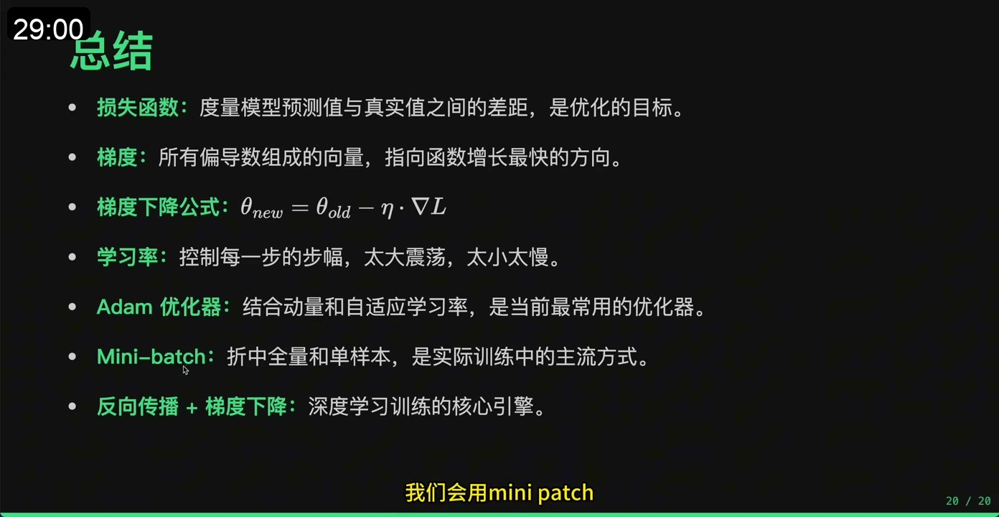
本集是机器学习和深度学习之间非常关键的一集,因为它把“模型如何学习”讲清楚了。
入库建议
建议拆成主节点:
梯度下降: 损失如何指导参数更新
正文重点保留:
- 损失函数只衡量好坏,梯度给出方向。
- 导数、偏导数、梯度的层级关系。
- 更新公式
θ_new = θ_old - η * grad。 - 学习率对收敛的影响。
- 优化器只做概念铺垫,Adam 等细节后续再展开。
同时建议建立到数学基础的引用:
微积分: 导数、偏导数、梯度与矩阵求导
第 6 集: 数据预处理
1. 本集定位: 让模型吃到干净一致的数据
数据预处理不是模型之外的杂活,而是机器学习训练能否成立的前提。它回答的是: 原始表格、缺失值、类别字段、量纲差异这些东西,怎样变成模型可以稳定使用的输入。
2. 准备环境与数据
视频先从数据集、依赖和字段说明开始。对知识库来说,这里适合作为实践章节的模板: 每个实验都先交代数据来源、字段含义、目标变量和依赖环境。
3. 数据集划分: 先留出未来考试卷
训练集用于学习规律,测试集用于模拟未来数据。关键不是“切一下数据”,而是避免模型在评估时偷看答案。
4. EDA: 先看数据长什么样
探索性数据分析先回答几个基础问题: 有多少行列、字段类型是什么、数值分布如何、标签是否偏斜。它是正式建模前的体检。
5. 可视化: 发现分布、离群和相关性
直方图、箱线图、散点图、相关性热力图能快速暴露异常分布和变量关系。这里适合连接“数据分析”和“建模”两条线。
6. 缺失值处理: 不同字段不同策略
缺失值不能一概删除。数值字段可以均值/中位数填充,类别字段可以众数或单独的 unknown 类别。策略要跟业务含义和缺失比例一起看。
7. 批量处理缺失值
代码层面要把缺失值处理固定成可重复流程。后续如果进入 sklearn Pipeline,这一步就不应该散落在 notebook 的临时代码里。
8. 异常值处理: 不要让少数极端点主导模型
异常值可能是真实极端样本,也可能是录入错误。处理前要先判断来源,再决定删除、截断、替换或保留。
9. 特征编码: 类别变量要转成数字
模型不能直接理解“红色、蓝色、城市名”这类文本类别。编码的核心是把类别信息变成数值表示,但不能随便引入错误的大小关系。
10. One-Hot Encoding: 避免制造假顺序
独热编码适合无天然顺序的类别,例如颜色、城市、职业。它用多列 0/1 表示类别,避免模型误以为类别之间存在大小顺序。
11. Label Encoding: 适合有序或树模型场景
标签编码把类别映射成整数,实现简单但可能引入顺序含义。在线性模型中要谨慎,在树模型中通常更能被接受。
12. 特征构造与删除
特征工程不是堆字段,而是把原始信息变成更有表达力的变量,同时删除重复、泄露或噪声较大的字段。
13. 标准化: 均值为 0,方差为 1
标准化常用于线性模型、逻辑回归、SVM、神经网络等对尺度敏感的算法。它让不同量纲的特征在优化时更公平。
14. 归一化: 压到固定范围
归一化通常把数值缩放到 0 到 1 或 -1 到 1。它适合需要固定范围输入的场景,但对异常值更敏感。
15. Pipeline: 把预处理变成可复现流程
Pipeline 的价值是把填充、编码、缩放、训练这些步骤绑定在一起,减少训练/测试处理不一致的问题。
16. 本集总结
这集适合放在机器学习实践主线前面: 没有干净、一致、可复现的数据处理,后面的模型评估和调参都不可靠。
入库建议
- 建议建立主节点
数据预处理: 从原始数据到模型输入。 - 正文重点保留数据划分、EDA、缺失值、异常值、类别编码、特征缩放、Pipeline。
- 实验部分可用 sklearn 的
ColumnTransformer与Pipeline作为标准实现。
第 7 集: 模型评估
1. 本集定位: 训练完不等于模型好

这一集补上线性回归之后最容易漏掉的一步: 如何判断模型是否真的有效。模型评估不是看训练时感觉不错,而是用指标和验证方式判断泛化能力。
2. Baseline: 先有参照物

Baseline 是最简单的参照模型。只有先知道“什么都不聪明的模型”能做到什么水平,我们才知道复杂模型是否真的带来收益。
3. 加州房价数据集

视频用加州房价作为回归任务。它适合作为机器学习实践的早期例子: 特征是数值型,目标是连续值,能自然引出误差指标。
4. 训练 Baseline 模型

这里的重点不是模型多复杂,而是建立评估流程: 数据划分、训练、预测、计算指标。流程稳定后,后续模型替换才有意义。
5. MAE: 平均绝对误差

MAE 直接表示平均预测偏差,单位和目标值一致,比较容易解释。缺点是对大误差不够敏感。
6. MSE: 平方误差

MSE 会放大大误差,因此适合惩罚严重预测偏差。但它的单位是平方后的单位,解释不如 MAE 直观。
7. RMSE: 把 MSE 拉回原单位

RMSE 是 MSE 开根号后的结果,既保留了对大误差敏感的特点,又回到目标变量的原始单位。
8. R2: 解释了多少波动

R2 试图回答: 模型相比“总是预测平均值”的基准,解释了多少目标变量变化。它适合做整体拟合效果判断。
9. Baseline 评估结果

把多个指标放在一起看,比只盯一个数字更稳。MAE、RMSE、R2 分别从不同角度刻画模型表现。
10. 残差分析: 数字之外的诊断

残差图能看出模型有没有系统性偏差。若残差随预测值呈明显结构,说明模型可能遗漏了非线性或关键特征。
11. 交叉验证: 减少一次划分的偶然性

单次训练/测试切分可能碰巧容易或困难。交叉验证通过多次切分取平均,让评估更稳定。
12. K-Fold 交叉验证实战

K-Fold 把数据分成 K 份,轮流用一份验证、其余训练。它适合样本量不大时更充分地利用数据。
13. 训练集 vs 测试集: 看泛化差距

训练分数高、测试分数低,通常指向过拟合。训练和测试都差,更可能是欠拟合。这个诊断连接到下一集。
14. 下一步: 欠拟合与过拟合

模型评估的价值在于指导行动: 指标差了,究竟该加复杂度、加数据、做正则化,还是换模型? 下一集正好展开。
入库建议
- 建议建立主节点
模型评估: 如何判断模型有没有学会。 - 回归指标建议按 MAE、MSE/RMSE、R2、残差分析、交叉验证展开。
- 正式知识库正文要特别强调: 训练集表现不等于泛化能力。
第 8 集: 欠拟合与过拟合
1. 本集定位: 模型训练的两种困境
评估指标告诉我们模型好不好,欠拟合和过拟合解释“为什么不好”。一个是模型太简单,一个是模型记住了训练集细节。
2. 欠拟合: 学得太粗
欠拟合表示模型表达能力不足,连训练集规律都抓不住。典型表现是训练集和测试集都差。
3. 过拟合: 学得太碎
过拟合表示模型把训练数据中的噪声也记住了。典型表现是训练集很好,测试集明显变差。
4. 三种状态对比
欠拟合、合适拟合、过拟合可以用训练误差和测试误差一起判断。只看训练误差会很容易被骗。
5. 学习曲线: 诊断工具
学习曲线把训练分数和验证分数随样本量变化画出来,能帮助判断是数据不够、模型太弱,还是复杂度太高。
6. 拟合效果可视化
图像化对理解最有帮助: 欠拟合曲线太平,过拟合曲线过于弯折,合适模型在趋势和细节之间取得平衡。
7. 绘制学习曲线
实践中不要只凭肉眼看一张拟合图,还要用学习曲线、验证曲线和指标共同判断。
8. 如何解决欠拟合
欠拟合通常需要增加模型表达能力、增加有效特征、减少过强正则化,或者训练更久。
9. 增加模型复杂度
在线性回归里加入多项式特征,是增加复杂度的直观方式。它能拟合曲线,但也会提高过拟合风险。
10. 如何解决过拟合
过拟合可以通过更多数据、减少复杂度、正则化、早停、Dropout 等方式缓解。机器学习阶段重点先理解复杂度和正则化。
11. 正则化: 惩罚过大的参数
正则化把模型复杂度写进损失函数,让模型在拟合数据和保持简单之间做权衡。
12. L1 与 L2 正则化
L1 倾向于让部分参数变成 0,带来特征选择效果;L2 倾向于让参数整体变小,让模型更平滑稳定。
13. 使用正则化解决过拟合
代码层面可以用 Ridge、Lasso、ElasticNet 等模型实验正则化效果。这里很适合设计一个本地 sklearn 小实验。
14. 正则化后的对比结果
如果正则化合适,测试集表现会改善,但训练集可能稍微下降。这正是“不要死记训练集”的体现。
15. 总结与展望
欠拟合和过拟合是机器学习里贯穿始终的诊断框架。后续不管是树模型、集成学习还是神经网络,都会反复遇到。
16. 线性回归的重要性
线性回归虽然简单,但它把数据、模型、损失、优化、评估和泛化问题都串起来了,非常适合作为机器学习主线起点。
入库建议
- 建议建立主节点
泛化: 欠拟合、过拟合与正则化。 - 正文最好把“训练集/测试集表现组合”做成诊断表。
- 实验可用多项式回归 + Ridge/Lasso 展示复杂度和正则化的影响。
第 9 集: 逻辑回归
1. 本集定位: 从回归走向分类
逻辑回归名字里有“回归”,但主要用于分类。它是从线性模型过渡到概率分类模型的关键节点。
2. 什么是分类问题
分类任务预测的是离散类别,例如是否患病、是否垃圾邮件、图片属于哪一类。它和线性回归预测连续数值不同。
3. 为什么需要逻辑回归
线性回归输出可以是任意实数,不适合直接表示概率。逻辑回归用 sigmoid 把线性输出压到 0 到 1。
4. Sigmoid 函数
Sigmoid 把 z = wx + b 映射成概率 p。这一步让线性模型可以表达“属于正类的概率”。
5. 为什么需要 Sigmoid
Sigmoid 的输出区间、单调性和可导性都适合二分类。它把“分数”变成“概率解释”。
6. 为什么不使用 MSE
分类里用 MSE 会让优化曲面不够理想,而且概率解释不自然。逻辑回归通常搭配交叉熵损失。
7. 分类问题损失的特征
分类损失要惩罚“自信但错误”的预测。如果真实标签是 1,预测概率越接近 0,惩罚应该越大。
8. 基础工具: 对数函数
对数函数把概率接近 0 的错误预测放大惩罚,这正好符合分类任务的需求。
9. 伯努利分布
二分类标签可以看成伯努利随机变量。这个视角把逻辑回归和概率建模连接起来。
10. 最大似然估计
最大似然的思想是: 找到一组参数,让已观察到的标签数据出现的概率最大。交叉熵可以从这个思路推出。
11. 交叉熵损失
交叉熵衡量真实标签分布和预测概率分布之间的差异。分类越自信且越正确,损失越小。
12. 梯度下降更新参数
逻辑回归依然遵循“预测 -> 损失 -> 梯度 -> 更新”的训练循环,只是模型输出和损失函数换成分类形式。
13. 乳腺癌数据集实战
视频用二分类数据集演示逻辑回归训练。这个例子适合作为 sklearn 分类实验的第一个案例。
14. 预测概率分布可视化
分类模型不只输出类别,还可以输出概率。概率分布能帮助理解模型信心和阈值选择。
15. 混淆矩阵
混淆矩阵把 TP、FP、TN、FN 展开,比单一准确率更能说明模型错在哪里。
16. Precision、Recall、F1
Precision 关注“预测为正的有多少是真的”,Recall 关注“真实为正的找回了多少”,F1 在两者之间折中。
17. ROC 曲线与 AUC
ROC/AUC 用于观察不同阈值下的分类表现。它把阈值选择从一个点扩展成一条曲线。
18. 多分类与 Softmax
多分类时通常用 Softmax 把多个类别分数转成概率分布。这里正好连接深度学习分类输出层。
19. 本集总结
逻辑回归是理解分类模型的核心入口: 线性打分、概率映射、交叉熵损失、梯度下降、分类指标都在这里汇合。
入库建议
- 建议建立主节点
逻辑回归: 从线性打分到概率分类。 - 数学细节可链接到概率基础、对数函数、最大似然、交叉熵。
- 实验建议使用乳腺癌二分类数据,同时展示混淆矩阵、PR/F1、ROC/AUC。
第 10 集: 决策树
1. 本集定位: 最像人类提问的模型
决策树用一连串“如果...那么...”的问题进行判断。它直观、可解释,非常适合从线性模型过渡到非线性模型。
2. 像人一样层层提问
视频用周末打网球例子说明: 人会先问天气,再问湿度或风。决策树把这种层层判断变成模型结构。
3. 什么是决策树
内部节点是问题,分支是答案,叶子节点是最终预测。分类树输出类别,回归树可以输出数值。
4. 构建决策树: 让结果越来越纯
训练决策树的关键是选择哪个特征先分裂。好分裂会让子节点类别更单一,也就是纯度更高。
5. 熵与信息增益
熵衡量混乱程度,信息增益衡量一次分裂减少了多少混乱。信息增益越大,特征越适合当前分裂。
6. 基尼不纯度
Gini 用更简单的计算衡量节点混乱程度。sklearn 决策树默认常见指标之一就是 Gini。
7. 决策树的生长过程
训练过程可以理解为递归分裂: 找最佳特征、分裂数据、继续对子节点重复,直到满足停止条件。
8. 鸢尾花数据集
鸢尾花是分类任务经典数据集。它适合展示决策树如何通过花瓣长度、宽度等特征区分品种。
9. 训练与可视化
决策树的优势之一是可以画出来。树结构让模型推理路径可见,这也是它在解释性场景中的价值。
10. 节点信息解读
节点里的 samples 表示样本数,value 表示类别分布,gini 表示混乱程度,class 是当前默认预测类别。
11. 花瓣尺寸决定了类别
这类规则可解释性很强: 例如花瓣长度小于某阈值就归为某类。它把模型预测变成可读的判断链。
12. 剪枝: 防止过拟合
不加限制的树容易把噪声也分出来。剪枝通过限制深度、叶子节点样本数或后剪枝减少过拟合。
13. 总结与展望: 走向森林
单棵树直观但不稳定。下一步自然引出随机森林: 用很多棵树投票,降低单棵树的偶然性。
入库建议
- 建议建立主节点
决策树: 用规则分裂数据。 - 正文重点解释树结构、纯度、信息增益/Gini、剪枝、可解释性。
- 可以作为连接随机森林、GBDT、XGBoost 的入口节点。
第 11 集: 随机森林
1. 本集定位: 用多棵树降低单棵树的不稳定
单棵决策树解释性强,但容易过拟合且对数据扰动敏感。随机森林用一组树投票来提升稳定性。
2. 核心思想: 集成学习
集成学习把多个弱模型组合成更强模型。随机森林属于 Bagging 思路: 多个模型独立训练,最后投票或平均。
3. 为什么叫随机森林
森林来自很多棵树,随机来自两层随机: 样本随机和特征随机。正是这种随机性让树与树之间产生差异。
4. 样本随机: Bootstrap
每棵树从训练集中有放回抽样得到自己的训练数据。不同树看到的数据不同,因此错误也不完全相同。
5. 特征随机: Random Subspace
每次分裂只从部分特征中选择最佳特征,让不同树形成不同视角,避免大家都长成同一棵树。
6. 袋外估计 OOB
Bootstrap 会让部分样本没有被某棵树抽到,这些样本可以作为该树的临时验证集,形成 OOB 估计。
7. 算法工作流程
随机森林流程是: 抽样本、抽特征、训练多棵树、汇总投票。它把一棵高方差模型变成一个更稳的整体。
8. 代码实现: 鸢尾花分类
视频用 sklearn 训练随机森林。实践上,它常被用作表格数据的强 baseline。
9. 评估结果
随机森林通常能比单棵树更稳定,但也要继续用测试集、交叉验证和指标评估,不能只看训练准确率。
10. 特征重要性
随机森林可以给出特征重要性,帮助判断哪些变量对预测贡献更大。但重要性不等于因果关系。
11. 特征重要性可视化
可视化特征重要性很适合做模型解释,尤其在表格数据项目里能帮助做特征筛选和业务沟通。
12. 核心优势
随机森林的优势是抗过拟合、对异常值较稳、能处理非线性关系,且默认效果往往不错。
13. 局限性
局限是模型体积较大、预测速度慢于单棵树、解释性弱于单棵树,并且在超高维稀疏数据上未必最佳。
14. 下一站: 梯度提升树家族
随机森林是多棵树并行投票,GBDT/XGBoost 则是一棵接一棵纠错。两者都是树模型的重要分支。
入库建议
- 建议建立主节点
随机森林: Bagging 与多树投票。 - 正文重点讲两层随机、OOB、特征重要性、优缺点。
- 要和下一节 Boosting 对比: 随机森林并行独立,GBDT 前后依赖。
第 12 集: 集成学习与梯度提升树
1. 本集定位: 从多树投票到逐步纠错
这一集从 Bagging 和 Boosting 对比开始。随机森林强调并行投票,Boosting 强调后一个模型修正前一个模型的错误。
2. Boosting: 接力纠错
Boosting 的直觉是: 第一棵树先预测,第二棵树重点学习第一棵树没处理好的残差,不断迭代。
3. 核心对比
Bagging 降低方差,Boosting 更强调降低偏差并逐步提升拟合能力。它们都属于集成学习,但训练方式完全不同。
4. GBDT 核心原理
GBDT 用多棵决策树累加形成模型,每棵新树都沿着损失下降方向去修正当前模型。
5. 每棵树在做什么
每一步训练新树时,目标不是重新拟合标签,而是拟合当前模型的负梯度或残差方向。
6. 损失函数与负梯度
负梯度表示让损失下降最快的方向。GBDT 可以理解为在函数空间里做梯度下降。
7. 手搓 GBDT: 代码实现
手写代码有助于理解 GBDT 的本质: 初始化预测、计算残差/负梯度、训练新树、累加更新。
8. 残差变化可视化
多棵树叠加后,模型会逐步逼近目标函数。可视化能看到每一轮如何修正上轮的不足。
9. GBDT 的优缺点
GBDT 精度强、适合表格数据,但训练串行、对参数敏感,也容易在数据噪声上过拟合。
10. XGBoost: 工业界进化
XGBoost 在 GBDT 基础上加入正则化、二阶梯度、列采样、缺失值处理等工程优化,长期是表格竞赛强基线。
11. LightGBM
LightGBM 强调速度和内存效率,常用 leaf-wise 生长、直方图算法等优化,适合大规模表格数据。
12. CatBoost
CatBoost 更擅长处理类别特征,减少目标泄漏和类别编码带来的偏差,在类别字段多的任务中很有价值。
13. 三者怎么选
简单判断: 追求稳妥强基线用 XGBoost,大数据和速度优先看 LightGBM,类别特征多可考虑 CatBoost。
14. XGBoost 实战
实践部分用加州房价预测对比随机森林和 XGBoost,适合作为表格数据建模实验。
15. 结果对比
结果对比要看训练误差、验证误差和泛化表现。提升树效果好,但也需要防止过拟合。
16. Early Stopping
早停通过验证集监控训练轮数,当性能不再提升时停止,是 Boosting 和深度学习里都常用的防过拟合手段。
17. 本集总结
这集是传统机器学习表格建模的重点: GBDT/XGBoost/LightGBM/CatBoost 是从决策树一路发展出来的强模型家族。
入库建议
- 建议建立主节点
集成学习: Bagging、Boosting 与 GBDT 家族。 - 正文要用一张对比图串起随机森林、GBDT、XGBoost、LightGBM、CatBoost。
- 实践建议用同一个表格回归数据对比 RandomForestRegressor 与 XGBoost/LightGBM。
第 13 集: K-Means 聚类
1. 本集定位: 无监督学习的第一个模型
K-Means 处理的是没有标签的数据。它不问“这个样本是什么类”,而是问“哪些样本彼此更像”。
2. K-Means 核心思想
先设定 K 个簇中心,再让每个点归到最近中心,然后重新计算中心。重复这个过程直到稳定。
3. 质心与距离度量
质心是簇内样本的平均位置,距离度量决定“相似”的定义。常见选择是欧氏距离。
4. 簇内相似度 SSE
K-Means 的目标是让簇内平方误差 SSE 尽可能小,也就是每个点尽量靠近自己的簇中心。
5. 迭代流程
算法流程是初始化中心、分配样本、更新中心、判断收敛。它简单,但会受初始点和 K 值影响。
6. 完整流程代码
手写迭代代码能看清 K-Means 不需要标签: 它完全根据距离和簇中心更新来组织数据。
7. 迭代动画
动画能直观看到点不断换簇、中心不断移动,最后形成稳定划分。
8. K-Means++ 初始化
K-Means++ 通过更聪明地选择初始中心,降低陷入坏局部解的概率。
9. 肘部法则选择 K
K 值不是模型自动知道的。肘部法则通过观察 SSE 随 K 增加的下降拐点,帮助选择合适簇数。
10. 二维数据可视化
二维可视化适合教学演示,可以看到聚类前后样本如何被分组。真实高维数据则需要降维辅助观察。
11. 可视化结果
结果图能显示 K-Means 对球状、距离可分的簇较有效,但对复杂形状簇并不总是理想。
12. 常见应用
聚类可用于客户分群、图像颜色压缩、异常检测、文本聚类等场景。核心是发现无标签数据中的结构。
13. 图像颜色压缩
图像颜色压缩把像素颜色聚成 K 类,用 K 个中心色替代原始颜色,是 K-Means 很直观的应用。
14. 总结与局限
K-Means 简单高效,但需要预设 K,对初始值、尺度和离群点敏感,也偏好近似球形簇。
15. 实用改进策略
实践中常用多次初始化、特征缩放、Mini-Batch K-Means 等方法提升稳定性和效率。
16. 扩展算法
K-Medoids、DBSCAN、层次聚类等方法能处理不同聚类假设,适合作为无监督学习支线的扩展。
入库建议
- 建议建立主节点
K-Means: 用距离发现簇结构。 - 正文要强调无监督学习没有标签,评价标准与监督学习不同。
- 实验建议用二维 toy data、鸢尾花特征和图像颜色压缩三个层级展开。
第 14 集: PCA 主成分分析
1. 本集定位: 高维特征太多怎么办

PCA 解决的是特征多、冗余高、可视化困难的问题。它属于无监督降维方法。
2. 传统降维方法

降维可以分为特征选择和特征提取。PCA 属于特征提取: 它把原特征组合成新的主成分。
3. 什么是 PCA

PCA 寻找能保留数据最大方差的方向,用少数新坐标表示原始数据中的主要变化。
4. 身高体重例子

当两个变量高度相关时,它们包含的信息有重叠。PCA 会找出最能代表整体变化的一条方向。
5. 寻找最佳代表方向

第一主成分是数据投影后方差最大的方向。它尽量保留原数据的主要差异。
6. 房价地图例子

二维地理坐标或多维房价特征都可能存在冗余结构。PCA 用新轴重新表达数据。
7. PCA 的压缩结果

压缩不是简单删除列,而是用主成分保留尽可能多的信息。保留多少主成分要看解释方差比例。
8. 方差与协方差

方差衡量单个特征的变化范围,协方差衡量两个特征是否一起变化。PCA 的数学基础就在这里。
9. 数学流程总览

PCA 的步骤可以概括为: 去中心化、计算协方差矩阵、求特征值和特征向量、选择主成分、投影数据。
10. 数据去中心化

去中心化让每个特征均值为 0,避免均值位置影响协方差和方向判断。
11. 协方差矩阵

协方差矩阵描述所有特征之间的共同变化关系,它是 PCA 找方向的输入。
12. 特征值与特征向量

特征向量给出方向,特征值表示该方向上的方差大小。特征值越大,对应方向保留的信息越多。
13. 选择主成分并构建投影矩阵

按特征值从大到小选择前几个特征向量,就得到投影矩阵。这个矩阵把原数据映射到低维空间。
14. 数据投影

投影后得到的新数据维度更低,但仍尽量保留原数据的主要结构。
15. 实战结果: 2D 投影可视化

PCA 常用于把高维数据压到 2D/3D 进行可视化。它不是分类器,但能帮助观察数据结构。
16. 随机森林 vs PCA

PCA 是无监督降维,随机森林特征重要性是监督信号下的特征评估。两者回答的问题不同。
17. 总结与局限

PCA 高效、可解释、适合线性降维,但只能捕捉线性结构,且主成分未必有直观业务含义。
入库建议
- 建议建立主节点
PCA: 用主成分压缩高维数据。 - 数学引用应落到线性代数的协方差矩阵、特征值、特征向量。
- 实验建议用鸢尾花或手写数字先做 2D 可视化,再讨论信息损失。
第 15 集: 机器学习总结与深度学习展望
1. 机器学习全貌: 一张地图

最后一集适合当作机器学习板块的总览索引。它把监督学习、无监督学习、模型训练、评估和工业工具串起来。
2. 机器学习究竟在学什么

机器学习不是背公式,而是从数据中学习输入到输出的映射关系,并在新数据上泛化。
3. 数据、特征、标签、模型

这四个词是机器学习最基础的语言: 数据提供样本,特征描述样本,标签提供目标,模型学习映射。
4. 监督学习: 有答案的学习

监督学习通过标签学习预测函数,典型任务包括回归和分类。线性回归与逻辑回归分别代表两个入口。
5. 典型监督学习算法

线性模型、逻辑回归、SVM、决策树、随机森林、GBDT 家族都可以放在监督学习主干下。
6. 从线性回归到可用模型

线性回归把数据、模型、损失、优化和评估串起来,是理解其他模型训练流程的基准。
7. 损失函数与梯度下降

损失函数衡量模型好坏,梯度下降告诉参数如何更新。这是机器学习和深度学习共用的训练核心。
8. 模型评估: 不只看训练集

评估要关注泛化能力,所以要划分训练集/测试集,使用交叉验证,并选择合适指标。
9. 欠拟合、过拟合与解决方法

欠拟合和过拟合是模型诊断的主轴。复杂度、正则化、数据量、特征工程都会影响它们。
10. 集成学习: 让模型组成团队

Bagging 和 Boosting 是两条重要路线: 前者并行投票降方差,后者逐步纠错提升拟合。
11. GBDT 家族

XGBoost、LightGBM、CatBoost 是表格数据建模中非常重要的工具链,适合实践阶段重点掌握。
12. 无监督学习: 从无标签数据中发现结构

无监督学习没有标准答案,核心是发现结构。K-Means 负责聚类,PCA 负责降维。
13. PCA 降维

PCA 用主成分保留主要信息、压缩维度,也常用于可视化和预处理。
14. 工业界自动化工具地图

自动化机器学习工具把特征处理、模型选择、调参和评估流程部分自动化,但理解原理仍然重要。
补充：从本地工具到大数据工具
本地生产级工具和大数据级工具不是两套完全不同的机器学习思想。核心流程仍然是数据、特征、模型、损失函数、优化训练和泛化评估;变化主要在数据规模和计算方式。
- 本地学习与中小规模建模常用 pandas、numpy、sklearn、PyCaret、AutoGluon、Optuna、MLflow 等工具,重点是快速探索、建立 baseline、组织 Pipeline、调参和记录实验。
- 大数据场景通常先用 Spark 处理离线批数据,用 Flink 处理实时数据流,再把清洗后的数据转成可训练特征。
- 传统机器学习在大数据下可使用 Spark MLlib、分布式 XGBoost、分布式 LightGBM 等库训练模型;模型思想不变,实现变成多机分布式计算。
- 深度学习或更大规模训练常见 PyTorch Distributed、Ray Train、DeepSpeed 等方案;它们负责把训练过程扩展到多 GPU 或多机器。
- MLflow、W&B 这类实验管理工具仍然适用,因为它们主要记录数据版本、参数、指标、模型产物和上线版本,不直接承担全量数据计算。
因此,可以先用 sklearn 理清模型思想和训练闭环,再把同一套方法迁移到 Spark、Flink、Ray 等分布式体系中。
15. 可视化与分析工具

工具能提升效率,但不是替代理解。对学习路线来说,先理解模型和评估,再引入工具更稳。
16. 从机器学习走向深度学习

深度学习延续机器学习的训练框架,但把“模型函数”扩展为多层可学习表示。
17. 下一站: 深度学习

这集可以作为机器学习板块的收束节点,同时连接深度学习板块: 神经网络、CNN、RNN、Transformer。
入库建议
- 建议建立主节点
机器学习总览: 从数据到泛化模型。 - 它适合做机器学习知识地图首页,不要写成细节正文。
- 后续可把每个分支节点链接到西瓜书、南瓜书、sklearn 实验和本系列视频整理。